机器学习指南
接着面试的机会，总结一些机器学习相关知识点，同时也给出常见面试题个人的解答，算是小小的复习。
基本概念理解
- 监督学习与非监督学习
- 监督学习需要标注数据（KNN, NB, SVM, DT, BP, RF, GBRT），这类算法必须知道预测什么，即目标变量的分类信息。对具有标记的训练样本进行学习，以尽可能对训练样本集外的数据进行分类预测。
- 非监督学习（KMEANS, DL）数据没有类别信息，也不会给定目标值，对未标记的样本进行训练学习，比发现这些样本中的结构知识。将数据集合分成由类似的对象组成的多个类的过程被称为聚类
- 离散数据与连续数据
- 离散数据（标称型）的目标变量结果只在有限目标集中取值，比方说真与假，一般用于分类
- 连续数据（数值型）目标变量主要用于回归分析，通过给定数据点的最优拟合曲线
- 生成方法和判别方法
- 判别方法：由数据直接学习决策函数Y=f(X)或者条件概率分布P(Y|X)作为预测的模型，即判别模型。基本思想是有限样本条件下建立判别函数，不考虑样本的产生模型，直接研究预测模型。典型的判别模型包括k近邻，感知级，决策树，支持向量机等。
- 判别方法的特点：判别方法直接学习的是决策函数Y=f(X)或者条件概率分布P(Y|X)。不能反映训练数据本身的特性。但它寻找不同类别之间的最优分类面，反映的是异类数据之间的差异。直接面对预测，往往学习的准确率更高。由于直接学习P(Y|X)或P(X)，可以对数据进行各种程度上的抽象、定义特征并使用特征，因此可以简化学习问题。
- k 近邻，决策树
- 生成方法：由数据学习联合概率密度分布P(X,Y)，然后求出条件概率分布P(Y|X)作为预测的模型，即生成模型：P(Y|X)= P(X,Y)/ P(X)。基本思想是首先建立样本的联合概率概率密度模型P(X,Y)，然后再得到后验概率P(Y|X)，再利用它进行分类，就像上面说的那样。
- 生成方法的特点：上面说到，生成方法学习联合概率密度分布P(X,Y)，所以就可以从统计的角度表示数据的分布情况，能够反映同类数据本身的相似度。但它不关心到底划分各类的那个分类边界在哪。生成方法可以还原出联合概率分布P(Y|X)，而判别方法不能。生成方法的学习收敛速度更快，即当样本容量增加的时候，学到的模型可以更快的收敛于真实模型，当存在隐变量时，仍可以用生成方法学习。此时判别方法就不能用。
- NB
- 由生成模型可以得到判别模型，但由判别模型得不到生成模型。
- 过拟合
- 如果一味的去提高训练数据的预测能力，所选模型的复杂度往往会很高，这种现象称为过拟合。所表现的就是模型训练时候的误差很小，但在测试的时候误差很大。
- 产生原因
- 因为参数太多，会导致我们的模型复杂度上升，容易过拟合
- 权值学习迭代次数足够多(Overtraining),拟合了训练数据中的噪声和训练样例中没有代表性的特征
- 解决方法
- 交叉验证法
- 减少特征
- 正则化
- 权值衰减
- 验证数据
- 泛化能力是指模型对未知数据的预测能力
- 线性分类器与非线性分类器
- 如果模型是参数的线性函数，并且存在线性分类面，那么就是线性分类器，否则不是
- 常见的线性分类器有：LR,贝叶斯分类，单层感知机、线性回归
- 常见的非线性分类器：决策树、RF、GBDT、多层感知机
- SVM两种都有(看线性核还是高斯核)
- 线性分类器速度快、编程方便，但是可能拟合效果不会很好
- 非线性分类器编程复杂，但是效果拟合能力强
- 特征比数据量还大时，选择什么样的分类器？
- 线性分类器，因为维度高的时候，数据一般在维度空间里面会比较稀疏，很有可能线性可分
- 对于维度很高的特征，你是选择线性还是非线性分类器？
- 线性分类器，因为维度高的时候，数据一般在维度空间里面会比较稀疏，很有可能线性可分
- 对于维度极低的特征，你是选择线性还是非线性分类器？
- 非线性分类器，因为低维空间可能很多特征都跑到一起了，导致线性不可分
朴素贝叶斯(NB)
- 优点
- 对小规模的数据表现很好
- 适合多分类任务
- 适合增量式训练
- 缺点
- 对输入数据的表达形式很敏感
- 适用数据范围
- 标称型
- 算法类型
- 分类算法
朴素贝叶斯是贝叶斯理论的一部分，贝叶斯决策理论的核心思想，即选择具有高概率的决策。朴素贝叶斯之所以冠以朴素开头，是因为其在贝叶斯理论的基础上做出了两点假设：
- 每个特征之间相互独立。
- 每个特征同等重要。
贝叶斯准则是构建在条件概率的基础之上的，其公式如下：
\[P(H|X)=\frac{P(X|H)}{P(X)}\]
ps：P(H|X）是根据X参数值判断其属于类别H的概率，称为后验概率。P(H)是直接判断某个样本属于H的概率，称为先验概率。P(X|H)是在类别H中观测到X的概率（后验概率），P(X)是在数据库中观测到X的概率。可见贝叶斯准则是基于条件概率并且和观测到样本的先验概率和后验概率是分不开的。
总结：对于分类而言，使用概率有事要比使用硬规则更为有效。贝叶斯概率及贝叶斯准则提供了一种利用已知值来估计未知概率的有效方法。可以通过特征之间的条件独立性假设，降低对数据量的需求。尽管条件独立性的假设并不正确，但是朴素贝叶斯仍然是一种有效的分类器。
一些要注意的地方：
- 给出的特征向量长度可能不同，所以需要归一化为统一长度的向量。比如说文本分类，如果特征是句子单词的话，则长度为整个词汇量的长度，对应位置是该单词出现的次数
- 利用贝叶斯分类器对文档进行分类时，要计算多个概率的乘积以获得文档属于某个类别的概率。如果其中一个概率值为0，那么最后乘积也为0。为了降低这种影响，可以将所有词出现数字初始化为1，并将分母初始化为2。拉普拉斯平滑法将每个k值出现次数事先都加1，通俗讲就是假设他们都出现过一次。
- 另一个遇到的问题是下溢出，这是由于太多很小的数相乘造成的，这里取对数，就可以把乘法变为加法，并且对最后结果没有影响。
- 遇到特征之间不独立问题，参考改进的贝叶斯网络，使用DAG来进行概率图的描述
线性回归(Linear Regression)
- 优点
- 结果易于理解
- 计算上不复杂。
- 缺点
- 对非线性数据拟合不好。
- 适用数据类型
- 数值型
- 标称型
- 算法类型
- 回归算法
在统计学中，线性回归（Linear Regression）是利用称为线性回归方程的最小平方函数对一个或多个自变量和因变量之间关系进行建模的一种回归分析。这种函数是一个或多个称为回归系数的模型参数的线性组合（自变量都是一次方）。只有一个自变量的情况称为简单回归，大于一个自变量情况的叫做多元回归。
线性方程的模型函数的向量表示形式为：\(h_\theta(x)=\theta^TX\)
通过训练数据集寻找向量系数的最优解，即为求解模型参数。其中求解模型系数的优化器方法可以用“最小二乘法”、“梯度下降”算法，来求解损失函数的最优解：
\[J(\theta)=\frac{1}{2}\sum_{i=1}^m(h_\theta(x^{(i)}-y^{(i)})\]
\[min_\theta \; J_\theta\]
最小二乘法
将训练特征表示为X矩阵，结果表示成y向量，仍然是线性回归模型，误差函数不变。那么θ可以直接由下面公式得出
\[\theta=(X^TX)^{-1}X^Ty\]
这里 y 是向量，此方法要求X是列满秩的，而且求矩阵的逆比较慢。
而在LWLR（局部加权线性回归）中，参数的计算表达式为:
\[\theta=(X^TX)^{-1}X^TWy\]
因为此时优化的是 \(\sum_i w^{(i)}(y^{(i)}-\theta^Tx^{(i)})^2\)
由此可见LWLR与LR不同，LWLR是一个非参数模型，因为每次进行回归计算都要遍历训练样本至少一次。
岭回归（ridge regression）
岭回归是一种专用于共线性数据分析的有偏估计回归方法，实质上是一种改良的最小二乘估计法，通过放弃最小二乘法的无偏性，以损失部分信息、降低精度为代价，获得回归系数更为符合实际、更可靠的回归方法，对病态数据的耐受性远远强于最小二乘法。
岭回归分析法是从根本上消除复共线性影响的统计方法。岭回归模型通过在相关矩阵中引入一个很小的岭参数K（1>K>0），并将它加到主对角线元素上，从而降低参数的最小二乘估计中复共线特征向量的影响，减小复共线变量系数最小二乘估计的方法，以保证参数估计更接近真实情况。岭回归分析将所有的变量引入模型中，比逐步回归分析提供更多的信息。
总结：与分类一样，回归也是预测目标值的过程。回归与分类的不同点在于，前者预测连续型的变量，而后者预测离散型的变量。回归是统计学中最有力的工具之一。在回归方程里，求得特征对应的最佳回归系统的方法是最小化误差的平方和。
k-近邻算法(kNN)
- 优点
- 精度高
- 对异常值不敏感
- 无数据输入假定
- 缺点
- 计算复杂度高
- 空间复杂度高
- 适用数据范围
- 数值型
- 标称型
- 算法类型
- 分类算法。
存在一个样本数据集合，也称作训练样本集，并且样本集中每个数据都存在标签，即我们知道样本集中每一数据与所属分类的对应关系。输入没有标签的新数据后，将新数据的每个特征与样本集中对应的特征进行比较，然后算法提取样本集中前 k 个最相似的数据。最后，选择 k 个最相似数据中出现次数最多的分类，作为新数据的分类。
为了避免不同的特征的数值不同所导致的影响不同，可能需要进行归一化，也就是把特征值转换成[0,1]值
k-近邻算法是分类数据最简单最有效的算法，必须保存全部数据集，如果训练数据集很大，必须使用大量的存储空间。此外，由于必须对数据集中的每个数据计算距离值，实际使用可能非常耗时。k决策树是其优化版本，可以节省大量的计算开销。
另一个却显示它无法给出任何数据的基础结构信息，因此我们也无法知晓平均实例样本和典型实例样本具有什么特征。使用概率测量方法可以解决这个问题。
三要素
- k值的选择
- 距离的度量（常见的距离度量有欧式距离，马氏距离等）
- 分类决策规则 （多数表决规则）
k值的选择
- k值越小表明模型越复杂，更加容易过拟合
- 但是k值越大，模型越简单，如果k=N的时候就表明无论什么点都是训练集中类别最多的那个类
所以一般k会取一个较小的值，然后用过交叉验证来确定。这里所谓的交叉验证就是将样本划分一部分出来为预测样本，比如95%训练，5%预测，然后k分别取1，2，3，4，5之类的，进行预测，计算最后的分类误差，选择误差最小的k
KD树
KD树是一个二叉树，表示对K维空间的一个划分，可以进行快速检索（那KNN计算的时候不需要对全样本进行距离的计算了）
在k维的空间上循环找子区域的中位数进行划分的过程。假设现在有K维空间的数据集T={x1,x2,x3,…xn},xi={a1,a2,a3..ak}
- 首先构造根节点，以坐标a1的中位数b为切分点，将根结点对应的矩形局域划分为两个区域，区域1中a1b
- 构造叶子节点，分别以上面两个区域中a2的中位数作为切分点，再次将他们两两划分，作为深度1的叶子节点，（如果a2=中位数，则a2的实例落在切分面）
- 不断重复2的操作，深度为j的叶子节点划分的时候，索取的ai 的i=j%k+1，直到两个子区域没有实例时停止
KD树的搜索
- 首先从根节点开始递归往下找到包含x的叶子节点，每一层都是找对应的xi
- 将这个叶子节点认为是当前的“近似最近点”
- 递归向上回退，如果以x圆心，以“近似最近点”为半径的球与根节点的另一半子区域边界相交，则说明另一半子区域中存在与x更近的点，则进入另一个子区域中查找该点并且更新”近似最近点“
- 重复3的步骤，直到另一子区域与球体不相交或者退回根节点
- 最后更新的”近似最近点“与x真正的最近点
KD树进行KNN查找
通过KD树的搜索找到与搜索目标最近的点，这样KNN的搜索就可以被限制在空间的局部区域上了，可以大大增加效率。
KD树搜索的复杂度
当实例随机分布的时候，搜索的复杂度为log(N)，N为实例的个数，KD树更加适用于实例数量远大于空间维度的KNN搜索，如果实例的空间维度与实例个数差不多时，它的效率基于等于线性扫描。
决策树
决策树的主要优势在于数据形式非常容易理解。决策树很多任务都是为了数据中所蕴含的知识信息，因此决策树可以使用不熟悉的数据集合，并从中提取出一系列规则，机器学习算法最终将使用这些机器从数据集中创造的规则。
- 优点
- 计算复杂度不高
- 输出结果易于理解
- 对中间值的缺失不敏感
- 可以处理不相关特征数据
- 缺点
- 容易过拟合（后面出现了随机森林）
- 适用数据类型
- 数值型
- 标称型
- 算法类型
- 分类算法。
- 数据要求
- 树的构造只适用于标称型的数据，因此数值型数据必须离散化。
在构造决策树时，我们需要解决的第一个问题就是，当前数据集上哪个特征在划分数据分类时起决定性作用。为了找到决定性的特征，划分出最好的结果，我们必须评估每个特征。完成测试之后，原始数据集就被划分为几个数据子集。这些数据子集会分布在第一个决策点的所有分支上。
创建分支的伪代码如下：
检测数据集中的每个子项是否属于同一分类：
if so return 类标签；
else
寻找数据集的最好特征
划分数据集
创建分支结点
for 每个划分的子集
调用函数createBranch并增加返回结果到分支结点中
return 分支结点
划分数据集的大原则是：将无序的数据变得更加有序。组织杂乱无章数据的一种方法就是使用信息论度量信息。信息增益(information gain)和熵(entropy)
信息熵的计算公式为：
\[H=-\sum P(x_i)log_2P(x_i)\]
其中 \(P(x_i)\) 表示选择该分类的概率。
决策树分类器就像带有终止块的流程图，终止块表示分类结果。开始处理数据时，我们首先需要测量集合中数据的不一致性，也就是熵，然后寻找最优方案划分数据集，直到数据集中的所有数据属于同一分类。
ID3 算法可以用于划分标称型数据集。构造决策树时，我们通常采用递归的方法将数据集转化为决策树。
决策树可能会产生过多的数据集划分，从而产生过度匹配数据集的问题。我们可以通过裁剪决策树，合并相邻的无法产生大量信息增益的叶节点，消除过度匹配的问题。
Logistic 回归
- 优点
- 计算代价不高
- 易于理解和实现
- 缺点
- 容易欠拟合
- 分类精度可能不高
- 适用数据类型
- 数值型
- 标称型
- 算法类别
- 分类算法
- 适用场景
- 二分类问题
Logistic 回归的目的是寻找一个非线性函数 Sigmoid 的最佳拟合参数，求解过程可以由最优化算法来完成。在最优化算法中，最常用的就是梯度上升算法，而梯度上升算法又可以简化为随机梯度上升算法。
logistic函数表达式为：
\[h_\theta(x)=g(\theta^Tx)=\frac{1}{1+e^{-\theta^Tx}}\]
Sigmoid 函数的定义为
\[g(z) = \frac{1}{1+e^{-z}}\]
导数形式为
\[g'(z)=g(z)(1-g(z))\]
函数值域范围(0,1)。可以用来做分类器。Sigmoid函数的函数曲线如下：

逻辑回归模型分解如下：
(1)首先将不同维度的属性值和对应的一组权重加和，公式如下：
\[z=w_0+w_1x_1+w_2x_2+\dots+w_mx_m\]
其中\(x_1,x_2,\dots,x_m\)是某样本数据的各个特征，维度为m
这里就是一个线性回归。W权重值就是需要经过训练学习到的数值，具体W向量的求解，就需要用到极大似然估计和将似然估计函数代入到 优化算法来求解。最常用的最后化算法有 梯度上升算法。
单个样本的后验概率为：
\[p(y\;|\;x;\theta)=(h_\theta(x))^y(1-h_\theta(x))^{(1-y)}\]
整个样本的后验概率：
\[L(\theta)=\sum_{i=1}^mp(y^{(i)}\;|\;x^{(i)},\theta)\]
其中
\[P(y=1\;|\;x, \theta)=h_\theta(x)\]
\[P(y=0\;|\;x, \theta)=1-h_\theta(x)\]
对整个样本的后验概率取对数得到：
\[\ell(\theta)=logL(\theta)=\sum_{i=1}^my^{(i)}log\;h(x^{(i)})+(1-y^{(i)})log(1-h(x^{(i)}))\]
然后利用梯度下降来进行求解，得到最终的 \(\theta\)
由上面可见：逻辑回归函数虽然是一个非线性的函数，但其实其去除Sigmoid映射函数之后，其他步骤都和线性回归一致。
(2)然后将上述的线性目标函数 z 代入到sigmond逻辑回归函数，可以得到值域为（0,0.5)和（0.5,1）两类值，等于0.5的怎么处理还以自己定。这样其实就得到了2类数据，也就体现了二分类的概念。
总结：Logistic回归的目的是寻找一个非线性函数Sigmoid的最佳拟合参数，参数的求解过程可以由最优化算法来完成。在最优化算法中，最常用的就是梯度上升算法，而梯度上升算法有可以简化为随机梯度上升算法。
随机梯度上升算法与梯度上升算法的效果相当，但占用更少的计算资源。此外，随机梯度上升是一个在线算法，它可以在新数据到来时就完成参数更新，而不需要重新读取整个数据集来进行批处理运算。
处理数据中的缺失值的技巧：
- 使用可用特征的均值来填补缺失值
- 使用特殊值来填补缺失值，如 -1
- 忽略有缺失值的样本
- 使用相似样本的均值填补缺失值
- 使用另外的机器学习算法预测缺失值
关于LR的过拟合问题
如果我们有很多的特性，在训练集上拟合得很好，但是在预测集上却达不到这种效果
- 减少feature个数（人工定义留多少个feature、算法选取这些feature）
- 正则化（留下所有的feature，但对于部分feature定义其parameter非常小）
关于LR的多分类：softmax
softmax:假设离散型随机变量Y的取值集合是{1,2,..,k},则多分类的LR为
\[P(Y=a\;|\;x)=exp(w_ax)/(1-\sum_{i=1}^kw_ix)\]
这里会输出当前样本下属于哪一类的概率，并且满足全部概率加起来=1
关于softmax和k个LR的选择
如果类别之间是否互斥（比如音乐只能属于古典音乐、乡村音乐、摇滚月的一种）就用softmax
否则类别之前有联系（比如一首歌曲可能有影视原声，也可能包含人声，或者是舞曲），这个时候使用k个LR更为合适
树回归
- 优点
- 可以对复杂和非线性的数据建模。
- 缺点
- 结果不易理解。
- 适用数据类型
- 数值型
- 标称型
- 算法类型
- 回归算法
简述：线性回归方法可以有效的拟合所有样本点(局部加权线性回归除外）。当数据拥有众多特征并且特征之间关系十分复杂时，构建全局模型的回归算法是比较困难的。此外，实际中很多问题为非线性的，例如常见的分段函数，不可能用全局线性模型类进行拟合。树回归将数据集切分成多份易建模的数据，然后利用线性回归进行建模和拟合。较为经典的树回归算法为CART（classification and regreesion trees 分类回归树）。
分类回归树(Classification And Regression Tree)是一个决策二叉树，在通过递归的方式建立，每个节点在分裂的时候都是希望通过最好的方式将剩余的样本划分成两类，这里的分类指标：
- 分类树：基尼指数最小化(gini_index)
- 回归树：平方误差最小化
分类树：
- 首先是根据当前特征计算他们的基尼增益
- 选择基尼增益最小的特征作为划分特征
- 从该特征中查找基尼指数最小的分类类别作为最优划分点
- 将当前样本划分成两类，一类是划分特征的类别等于最优划分点，另一类就是不等于
- 针对这两类递归进行上述的划分工作，直达所有叶子指向同一样本目标或者叶子个数小于一定的阈值
gini用来度量分布不均匀性（或者说不纯），总体的类别越杂乱，GINI指数就越大（跟熵的概念很相似）
解决决策树的过拟合
- 剪枝
- 前置剪枝：在分裂节点的时候设计比较苛刻的条件，如不满足则直接停止分裂（这样干决策树无法到最优，也无法得到比较好的效果）
- 后置剪枝：在树建立完之后，用单个节点代替子树，节点的分类采用子树中主要的分类（这种方法比较浪费前面的建立过程）
- 交叉验证
- 随机森林
随机森林 RF
优缺点
- 能够处理大量特征的分类，并且还不用做特征选择
- 在训练完成之后能给出哪些feature的比较重要
- 训练速度很快
- 很容易并行
- 实现相对来说较为简单
随机森林是有很多随机得决策树构成，它们之间没有关联。得到RF以后，在预测时分别对每一个决策树进行判断，最后使用Bagging的思想进行结果的输出（也就是投票的思想）
学习过程
- 现在有N个训练样本，每个样本的特征为M个，需要建K颗树
- 从N个训练样本中有放回的取N个样本作为一组训练集（其余未取到的样本作为预测分类，评估其误差）
- 从M个特征中取m个特征左右子集特征(m<<M)
- 对采样的数据使用完全分裂的方式来建立决策树，这样的决策树每个节点要么无法分裂，要么所有的样本都指向同一个分类
- 重复2的过程K次，即可建立森林
预测过程
- 将预测样本输入到K颗树分别进行预测
- 如果是分类问题，直接使用投票的方式选择分类频次最高的类别
- 如果是回归问题，使用分类之后的均值作为结果
参数问题
- 这里的一般取m=sqrt(M)
- 关于树的个数K，一般都需要成百上千，但是也有具体的样本有关（比如特征数量）
- 树的最大深度，（太深可能可能导致过拟合）
- 节点上的最小样本数、最小信息增益
泛化误差估计
使用oob（out-of-bag）进行泛化误差的估计，将各个树的未采样样本作为预测样本（大约有36.8%），使用已经建立好的森林对各个预测样本进行预测，预测完之后最后统计误分得个数占总预测样本的比率作为RF的oob误分率。
学习算法
- ID3算法：处理离散值的量
- C45算法：处理连续值的量
- Cart算法：离散和连续
支持向量机
- 优点
- 泛化错误率低
- 计算开销不大
- 结果易解释
- 缺点
- 对参数调节和核函数的选择敏感
- 原始分类器不加修改仅适用于处理二元分类问题
- 适用数据类型
- 数值型
- 标称型
- 类别
- 分类算法
- 适用场景
- 解决二分类问题。
将数据集分隔开来的直线称为分隔超平面(separating hyperplane)。如果数据对象是1024维的，那么就需要一个1023维的某某对象来对数据进行分隔，这个对象就叫超平面(hyperplane)，也就是分类的决策边界。分布在超平面一侧的所有数据都属于某个类别，而分布在另一侧的所有数据则属于另一个类别。
我们希望能找到离分隔超平面最近的点，确保它们离分隔面的距离尽可能远。这里点到分隔面的距离被称为间隔(margin)。我们希望间隔尽可能大，因为如果我们犯错或者在有限数据上训练分类器的话，我们希望分类器尽可能健壮。
支持向量(support vector)就是离分隔超平面最近的那些点。接下来要试着最大化支持向量到分隔面的距离。
分隔超平面的形式可以写成 \(w^T+b\)。要计算点 A 到分隔超平面的距离，就必须给出点到分隔面的法线或垂线的长度，值为 \[\frac{|w^TA+b|}{||w||}\]。这里的常数 b 类似于 Logistic 回归中的截距 \(w_0\)。
当计算数据点到分隔面的距离并确定分隔面的放置位置时，间隔是通过 \(label\times(w^T+b)\)来计算的。如果数据点处于正方向(+1)，\(w^Tx+b\) 会是一个很大的正数，同时 \(label\times(w^T+b)\)也会是一个很大的正数；而处于负方向时(-1)，\(label\times(w^T+b)\) 仍然会是一个很大的正数。
现在的目标就是找出分类器定义中的 w 和 b。为此，我们必须找到具有最小间隔的数据点，而这些数据点也就是前面提到的支持向量。一旦找到具有最小间隔的数据点，我们就需要对该间隔最大化：
\[arg max_{w,b}\{min_n(label·(w^Tx+b))·\frac{1}{||w||}\}\]
直接求解上述问题相当困难，所以需要将它转换成为另一种更容易求解的形式。
先考察一下大括号中的部分。由于对乘积进行优化是一件很讨厌的事情，因此我们要做的是固定其中一个因子而最大化其他因子。如果令所有支持向量的 \(label\times(w^T+b)\) 都为 1，那么就可以通过求 ||w|| 的最大值来得到最终解。但是，并非所有数据点的 \(label\times(w^T+b)\) 都等于 1，只有那些离分割超平面最近的点得到的值才为 1。而离超平面越远的数据点，其 \(label\times(w^T+b)\) 的值也就越大。
这里的约束条件就是 \(label\times(w^T+b) \ge 1\) 。对于这类优化问题，有一个非常著名的求解方法，拉格朗日乘子法。通过引入拉格朗日乘子，我们就可以基于约束条件来表述原来的问题。由于这里的约束条件都是基于数据点的，因此我们就可以将超平面写成数据点的形式，优化函数就变成
\[max_\alpha[\sum_{i=1}^m\alpha-\frac{1}{2}label^{(i)}·label^{(j)}·\alpha_i·\alpha_j\langle x^{(i)},x^{(j)}\rangle]\]
\(label\times(w^T+b)\) 被称为点到分隔面的函数间隔，\(\frac{|w^TA+b|}{||w||}\) 称为点到分隔面的几何间隔
尖括号表示两个向量的内积
约束条件为
\[\alpha \ge 0 \; and \; \sum_{i=1}^m \alpha_i·label^{(i)} = 0\]
考虑到数据不可能非常完美，就需要引入松弛变量(slack variable)来允许有些数据点可以处于分隔面错误的一侧。这样我们的优化目标就能保持仍然不变，但约束条件变成：
\[C \ge\alpha \ge 0 \; and \; \sum_{i=1}^m \alpha_i·label^{(i)} = 0\]
这里的常数 C 用于控制“最大化间隔”和“保证大部分点的函数间隔小于1.0”这两个目标的权重。在优化算法的实现代码中，常数 C 是一个参数，因此我们就可以通过调节该参数得到不同的结果。一旦求出了所有的 α，那么分隔超平面就可以通过这些 α 来表达。这一结论十分直接，SVM 中的主要工作就是求解这些 α。
SMO 高效优化算法（Sequential Minimal Optimization，SMO）
Platt 的 SMO 算法
SMO 表示序列最小化(Sequential Minimal Optimization)。Platt 的 SMO 算法是将大优化问题分解为多个小优化问题来求解的。这些小优化问题往往很容易求解，并且对它们进行顺序求解的结果与将它们作为整体来求解的结果是完全一致的。
SMO 算法的目标是求出一系列 α 和 b，一旦求出了这些 α，就很容易计算出权重向量 w 并得到分隔超平面。
它选择凸二次规划的两个变量，其他的变量保持不变，然后根据这两个变量构建一个二次规划问题，这个二次规划关于这两个变量解会更加的接近原始二次规划的解，通过这样的子问题划分可以大大增加整个算法的计算速度，关于这两个变量：
- 其中一个是严重违反KKT条件的一个变量
- 另一个变量是根据自由约束确定，好像是求剩余变量的最大化来确定的。
SMO 算法的工作原理是：每次循环中选择两个 α 进行优化处理。一旦找到一对合适的 α，那么就增大其中一个同时减小另一个。这里所谓的“合适”就是指两个 α 必须要符合一定的条件，条件之一就是这两个 α 必须要在间隔边界之外，第二个条件则是这两个 α 还没有进行过区间化处理或者不在边界上。
Platt SMO 算法中的外循环确定要优化的最佳 α 对。而简化版会跳过这一部分，首先在数据集上遍历每一个 α，然后在剩下的 α 集合中随机选择另一个 α，从而构建 α 对。这一点相当重要，要同时改变，因为我们有一个约束条件：
\[\alpha \ge 0 \; and \; \sum_{i=1}^m \alpha_i·label^{(i)} = 0\]
由于改变一个 α 可能会导致该约束条件失效，因此我们总是同时改变两个 α。
伪代码：
创建一个 α 向量并将其初始化为 0 向量
当迭代次数小于最大迭代次数时(外循环)
对数据集中的每个数据向量(内循环):
如果该数据向量可以被优化:
随机选择另外一个数据向量
同时优化这两个向量
如果两个向量都不能被优化，退出内循环
如果所有向量都没有被优化，增加迭代数量，继续下一次循环
完整的Platt SMO算法
在在选择第一个 α 值后，算法会通过一个内循环来选择第二个 α 值。在优化过程中，会通过最大化步长的方式来获得第二个 α 值。
在复杂数据上应用核函数
核函数(kernel) 和 径向基函数(fadial basis function)
利用核函数将数据映射到高维空间
从某个特征空间到另一个特征空间的映射是通过核函数来实现的。可以把核函数想象成一个包装器(wrapper)或者是接口(interface)，它能把数据从某个很难处理的形式转换成另一种较易处理的形式。
SVM 优化中一个特别好的地方是，所有的运算都可以写成内积(inner product)的形式。向量的内积指的是两个向量相乘，之后得到单个标量或者数值。我们可以把内积运算替换成核函数，而不必做简化处理。将内积替换成核函数的方式被称为核技巧(kernel trick)或者核变电(kernel substation)。
径向基核函数
采用向量作为自变量的函数，基于向量距离运算输出一个标量。这个距离可以是从<0, 0>向量或者其他向量开始计算的距离，我们使用径向基函数的高斯版本，公式如下：
\[k(x,y)=exp(\frac{-||x-y||^2}{2\sigma^2})\]
上述高斯核函数将数据从其特征空间映射到更高维的空间，具体来说这里是映射到一个无穷维的空间。
支持向量的数目存在一个最优值。SVM 的优点在于它能对数据进行高效分类。如果支持向量太少，就可能会得到一个很差的决策边界；如果支持向量太多，也就相当于每次都利用整个数据集进行分类，这种分类方法称为 k近邻。
可以这么看 SVM 比 k 近邻好的地方在于，从很多数据中找到最有代表性的数据点来作为分类的依据，可以有效减少多余的计算。
SVM 多分类方法
一对多
其中某个类为一类，其余n-1个类为另一个类，比如A,B,C,D四个类，第一次A为一个类，{B,C,D}为一个类训练一个分类器，第二次B为一个类,{A,C,D}为另一个类,按这方式共需要训练4个分类器，最后在测试的时候将测试样本经过这4个分类器f1(x),f2(x),f3(x)和f4(x),取其最大值为分类器(这种方式由于是1对M分类，会存在偏置，很不实用)
一对一(libsvm实现的方式)
任意两个类都训练一个分类器，那么n个类就需要n*(n-1)/2个svm分类器。
还是以A,B,C,D为例,那么需要{A,B},{A,C},{A,D},{B,C},{B,D},{C,D}为目标共6个分类器，然后在预测的将测试样本通过这6个分类器之后进行投票选择最终结果。（这种方法虽好，但是需要n*(n-1)/2个分类器代价太大，不过有好像使用循环图来进行改进）
小结
支持向量机的泛化错误率较低，也就是说它具有良好的学习能力，且学到的结果具有很好的推广性。这些优点使得向量机十分流行，有些人认为它是监督学习中最好的定式算法。
支持向量机试图通过求解一个二次优化问题来最大化分类间隔。
和方法或者说核技巧会将数据(有时是非线性数据)从一个低维空间映射到一个高维空间，可以将一个在低维空间中的非线性问题转换成高维空间下的线性问题来求解。和方法不止在 SVM 中适用，还可以用于其他算法中。而其中径向基函数是一个常用的度量两个向量距离的核函数。
支持向量机是一个二元分类器。当用其解决多元问题时，则需要额外的方法对其进行扩展。SVM 的效果也对优化参数和所用核函数中的参数敏感。
AdaBoost
- 优点
- 泛化错误率低
- 易编码，可以应用在大部分分类器上
- 无参数调整
- 缺点
- 对离群点敏感
- 适用数据类型
- 数值型
- 标称型
boosting 是一种与 bagging 很类似的技术。不论是在 boosting 还是 bagging 当中，所使用的多个分类器的类型都是一致的。但是在前者当中，不同的分类器是通过串行训练而获得的，每个新分类器都根据已训练出的分类器的性能来进行训练。boosting 是通过集中关注被已有分类器错分的那些数据来获得新的分类器。
由于 boosting 分类的结果是基于所有分类器的加权求和结果的，因此 boosting 与 bagging 不太一样。bagging 中的分类器权重是相等的，而 boosting 中的分类器权重并不相等，每个权重代表的是其对应分类器在上一轮迭代中的成功度。
boosting 方法拥有多个版本，这里只关注最流行的 AdaBoost
能否使用弱分类器和多个实例来构建一个强分类器？这是一个非常有趣的理论问题。这里的“弱”意味着分类器的性能比所及猜测要略好，但是也不会好太多。AdaBoost 算法即脱胎于上述理论问题。
AdaBoost 是 adaptive boosting(自适应 boosting)的缩写，其运行过程如下：训练数据中的每个样本各有一个权重，这些权重构成了向量 D。一开始，这些权重都初始化成相等值。首先在训练数据上训练处一个弱分类器并计算该分类器的错误率，然后在同一数据集上再次训练弱分类器。在分类器的第二次训练当中，将会重新调整每个样本的权重，其中第一次分对的样本的权重将会降低，而第一次分错的样本的权重将会提高。
为了从所有弱分类器中得到最终的分类结果，AdaBoost 为每个分类器都分配了一个权重值 α，这些 α 值是基于每个弱分类器的错误率进行计算的。错误率和 α 的公式为
\[\epsilon=\frac{未正确分类的样本数目}{所有样本数目}\]
\[\alpha=\frac{1}{2}ln(\frac{1-\epsilon}{\epsilon})\]
计算出 α 值之后，可以对权重向量 D 进行更新，以使那些正确分类的样本的权重降低而错分样本的权重升高。D 的计算方法如下：
正确情况：
\[D_i^{(i+1)}=\frac{D_i^(i)e^{-\alpha}}{\sum D}\]
错误情况：
\[D_i^{(i+1)}=\frac{D_i^(i)e^{\alpha}}{\sum D}\]
计算出 D 之后，AdaBoost 又开始进入下一轮迭代。AdaBoost 算法会不断地重复训练和调整权重的过程，直到训练错误率为 0 或者弱分类器的数目达到用户的指定值为止。
构建弱分类器：单层决策树(decision stump, 决策树桩)是一种简单的决策树，仅基于单个特征来做决策。
KMeans
- 优点
- 容易实现
- 对处理大数据集，该算法是相对可伸缩的和高效率的，因为它的复杂度大约是O(nkt)，其中n是所有对象的数目，k是簇的数目,t是迭代的次数。通常k<<n。这个算法通常局部收敛
- 算法尝试找出使平方误差函数值最小的k个划分。当簇是密集的、球状或团状的，且簇与簇之间区别明显时，聚类效果较好
- 缺点
- 可能收敛到局部最小值
- 在大规模数据集上收敛较慢
- k-平均方法只有在簇的平均值被定义的情况下才能使用，且对有些分类属性的数据不适合
- 要求用户必须事先给出要生成的簇的数目k
- 不适合于发现非凸面形状的簇，或者大小差别很大的簇
- 对于
噪声
和孤立点数据敏感，少量的该类数据能够对平均值产生极大影响
- 使用数据类型
- 数值型
- 算法类型
- 聚类算法
K-Means的基本步骤：
- 从数据对象中随机的初始化K个初始点作为质心。然后将数据集中的每个点分配到一个簇中，具体来讲每个点找到距其最近的质心，并将其分配给该质心所对应的簇。
- 计算每个簇中样本点的均值，然后用均值更新掉该簇的质心。然后划分簇结点。
- 迭代重复（2）过程，当簇对象不再发生变化时，或者误差在评测函数预估的范围时，停止迭代。
选择批次距离尽可能远的K个点
首先随机选取一个点作为初始点，然后选择距离与该点最远的那个点作为中心点，再选择距离与前两个点最远的点作为第三个中心点，以此类推，直至选取大k个
选用层次聚类或者Canopy算法进行初始聚类
聚类属于无监督学习，以往的回归、朴素贝叶斯、SVM等都是有类别标签y的，也就是说样例中已经给出了样例的分类。而聚类的样本中却没有给定y，只有特征x，比如假设宇宙中的星星可以表示成三维空间中的点集(x,y,z)。聚类的目的是找到每个样本x潜在的类别y，并将同类别y的样本x放在一起。
在聚类问题中，给我们的训练样本是 {x(1),...,x(m)}，每个 x(i)∈ Rn，没有了y。
K-means算法是将样本聚类成k个簇（cluster），具体算法描述如下：

下面累述一下K-means与EM的关系，首先回到初始问题，我们目的是将样本分成k个类，其实说白了就是求每个样例x的隐含类别y，然后利用隐含类别将x归类。由于我们事先不知道类别y，那么我们首先可以对每个样例假定一个y吧，但是怎么知道假定的对不对呢？怎么评价假定的好不好呢？我们使用样本的极大似然估计来度量，这里是就是x和y的联合分布P(x,y)了。如果找到的y能够使P(x,y)最大，那么我们找到的y就是样例x的最佳类别了，x顺手就聚类了。但是我们第一次指定的y不一定会让P(x,y)最大，而且P(x,y)还依赖于其他未知参数，当然在给定y的情况下，我们可以调整其他参数让P(x,y)最大。但是调整完参数后，我们发现有更好的y可以指定，那么我们重新指定y，然后再计算P(x,y)最大时的参数，反复迭代直至没有更好的y可以指定。
这个过程有几个难点，第一怎么假定y？是每个样例硬指派一个y还是不同的y有不同的概率，概率如何度量。第二如何估计P(x,y)，P(x,y)还可能依赖很多其他参数，如何调整里面的参数让P(x,y)最大。这些问题在以后的篇章里回答。
这里只是指出EM的思想，E步就是估计隐含类别y的期望值，M步调整其他参数使得在给定类别y的情况下，极大似然估计P(x,y)能够达到极大值。然后在其他参数确定的情况下，重新估计y，周而复始，直至收敛。
上面的阐述有点费解，对应于K-\(x^{(i)}\)对应隐含变量也就是最佳类别 \(c^{(i)}\)。最开始可以随便指定一个 \(c^{(i)}\) 给它，然后为了让 P(x,y) 最大（这里是要让 J 最小），我们求出在给定 c 情况下，J最小时的 \(u_j\)（前面提到的其他未知参数），然而此时发现，可以有更好的 \(c^{(i)}\)（质心与样例\(x^{(i)}\) 距离最小的类别）指定给样例 \(x^{(i)}\)，那么 \(c^{(i)}\) 得到重新调整，上述过程就开始重复了，直到没有更好的 \(c^{(i)}\) 指定。
这样从K-means里我们可以看出它其实就是EM的体现，E步是确定隐含类别变量 \(c^{(i)}\)，M步更新其他参数 u 来使J最小化。这里的隐含类别变量指定方法比较特殊，属于硬指定，从k个类别中硬选出一个给样例，而不是对每个类别赋予不同的概率。总体思想还是一个迭代优化过程，有目标函数，也有参数变量，只是多了个隐含变量，确定其他参数估计隐含变量，再确定隐含变量估计其他参数，直至目标函数最优。
混合高斯模型 GMM

这个式子的最大值是不能通过前面使用的求导数为0的方法解决的，因为求的结果不是close form。但是假设我们知道了每个样例的 \(z^{(i)}\)，那么上式可以简化为：


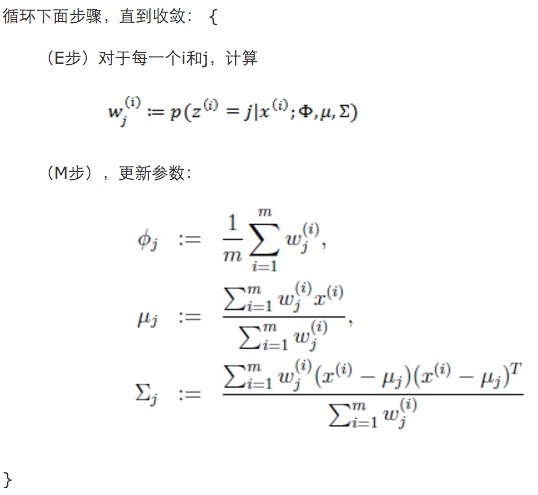

对比K-means可以发现，这里使用了“软”指定，为每个样例分配的类别 z^{(i)} 是有一定的概率的，同时计算量也变大了，每个样例i都要计算属于每一个类别j的概率。与K-means相同的是，结果仍然是局部最优解。对其他参数取不同的初始值进行多次计算不失为一种好方法。
EM 就是鸡生蛋蛋生鸡问题的一个解法，适合处理有隐变量的问题。
EM 算法
给定的训练样本是 \(\{x^{(1)},\dots,x^{(m)}\}\)，样例间独立，我们想找到每个样例隐含的类别z，能使得p(x,z)最大。p(x,z)的最大似然估计如下：

第一步是对极大似然取对数，第二步是对每个样例的每个可能类别z求联合分布概率和。但是直接求 \(\theta\) 一般比较困难，因为有隐藏变量 z 存在，但是一般确定了 z 后，求解就容易了。

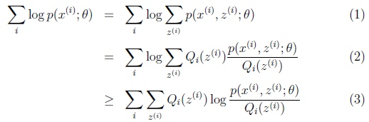
（1）到（2）比较直接，就是分子分母同乘以一个相等的函数。（2）到（3）利用了Jensen不等式，考虑到 log(x) 是凹函数（二阶导数小于0），而且
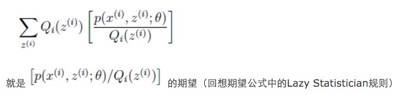

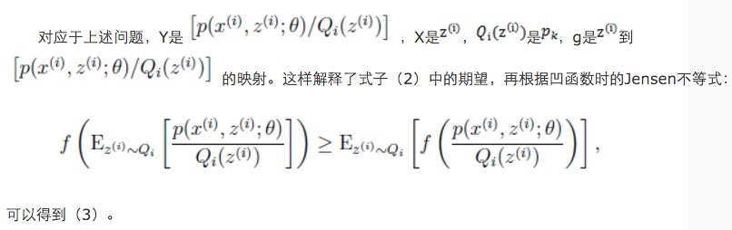

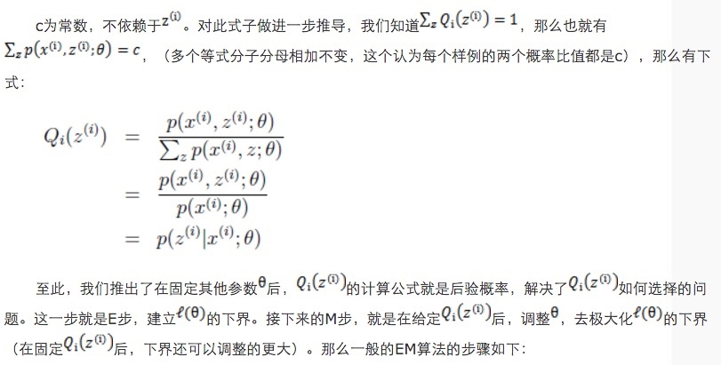
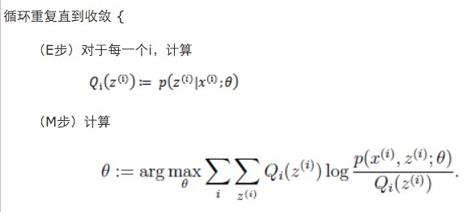
总结
如果将样本看作观察值，潜在类别看作是隐藏变量，那么聚类问题也就是参数估计问题，只不过聚类问题中参数分为隐含类别变量和其他参数，这犹如在x-y坐标系中找一个曲线的极值，然而曲线函数不能直接求导，因此什么梯度下降方法就不适用了。但固定一个变量后，另外一个可以通过求导得到，因此可以使用坐标上升法，一次固定一个变量，对另外的求极值，最后逐步逼近极值。对应到EM上，E步估计隐含变量，M步估计其他参数，交替将极值推向最大。EM中还有“硬”指定和“软”指定的概念，“软”指定看似更为合理，但计算量要大，“硬”指定在某些场合如K-means中更为实用（要是保持一个样本点到其他所有中心的概率，就会很麻烦）。
另外，EM的收敛性证明方法确实很牛，能够利用log的凹函数性质，还能够想到利用创造下界，拉平函数下界，优化下界的方法来逐步逼近极大值。而且每一步迭代都能保证是单调的。最重要的是证明的数学公式非常精妙，硬是分子分母都乘以z的概率变成期望来套上Jensen不等式，前人都是怎么想到的。
PCA 主成分分析
- 优点
- 降低数据的复杂性
- 识别最重要的多个特征。
- 缺点
- 不一定需要
- 且可能损失有用信息。
- 适用适用类型
- 数值型
- 技术类型
- 降维技术
按照一定的数学变换方法，把给定的一组相关变量（维度）通过线性变换转成另一组不相关的变量，这些新的变量按照方差依次递减的顺序排列。在数学变换中保持变量的总方差不变，使第一变量具有最大的方差，称为第一主成分，第二变量的方差次大，并且和第一变量不相关，称为第二主成分。依次类推，I个变量就有I个主成分。
通过低维表征的向量和特征向量矩阵，可以基本重构出所对应的原始高维向量
PCA 计算过程
首先介绍PCA的计算过程，假设我们得到的2维数据如下：

行代表了样例，列代表特征，这里有10个样例，每个样例两个特征。可以这样认为，有10篇文档，x是10篇文档中“learn”出现的TF-IDF，y是10篇文档中“study”出现的TF-IDF。也可以认为有10辆汽车，x是千米/小时的速度，y是英里/小时的速度，等等。
第一步分别求x和y的平均值，然后对于所有的样例，都减去对应的均值。这里x的均值是1.81，y的均值是1.91，那么一个样例减去均值后即为（0.69,0.49），得到

第二步，求特征协方差矩阵，如果数据是3维，那么协方差矩阵是

这里只有x和y，求解得

对角线上分别是x和y的方差，非对角线上是协方差。协方差大于0表示x和y若有一个增，另一个也增；小于0表示一个增，一个减；协方差为0时，两者独立。协方差绝对值越大，两者对彼此的影响越大，反之越小。
第三步，求协方差的特征值和特征向量，得到

上面是两个特征值，下面是对应的特征向量，特征值 0.0490833989 对应特征向量为 \((-0.735178656, 0.677873399)^T\)，这里的特征向量都归一化为单位向量。
第四步，将特征值按照从大到小的顺序排序，选择其中最大的k个，然后将其对应的 k 个特征向量分别作为列向量组成特征向量矩阵。
这里特征值只有两个，我们选择其中最大的那个，这里是1.28402771，对应的特征向量是 \((-0.677873399, -0.735178656)^T\)
第五步，将样本点投影到选取的特征向量上。假设样例数为 m，特征数为 n，减去均值后的样本矩阵为 \(DataAdjust(m\times n)\)，协方差矩阵是 \(n\times n\)，选取的 k 个特征向量组成的矩阵为 \(EigenVectors(n\times k)\)。那么投影后的数据 FinalData 为
\[FinalData(m \times k) = DataAdjust(m \times n) \times EigenVectors(n \times k)\]
这里是
\[FinalData(10\times 1) = DataAdjust(10\times 2\;matrix) \times 特征向量(-0.677873399, -0.735178656)^T\]
得到结果是

这样，就将原始样例的n维特征变成了k维，这k维就是原始特征在k维上的投影。
上面的数据可以认为是learn和study特征融合为一个新的特征叫做LS特征，该特征基本上代表了这两个特征。上述过程有个图描述：
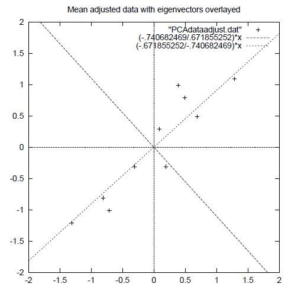
正号表示预处理后的样本点，斜着的两条线就分别是正交的特征向量（由于协方差矩阵是对称的，因此其特征向量正交），最后一步的矩阵乘法就是将原始样本点分别往特征向量对应的轴上做投影。
如果取的k=2，那么结果是
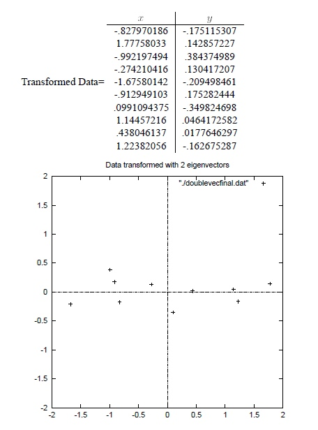
这就是经过PCA处理后的样本数据，水平轴（上面举例为LS特征）基本上可以代表全部样本点。整个过程看起来就像将坐标系做了旋转，当然二维可以图形化表示，高维就不行了。上面的如果k=1，那么只会留下这里的水平轴，轴上是所有点在该轴的投影。
这样PCA的过程基本结束。在第一步减均值之后，其实应该还有一步对特征做方差归一化。比如一个特征是汽车速度（0到100），一个是汽车的座位数（2到6），显然第二个的方差比第一个小。因此，如果样本特征中存在这种情况，那么在第一步之后，求每个特征的标准差 \(\sigma\)，然后对每个样例在该特征下的数据除以 \(\sigma\)。
归纳一下，使用我们之前熟悉的表示方法，在求协方差之前的步骤是：

其中 \(x^{(i)}\) 是样例，共 m 个，每个样例 n 个特征，也就是说 \(x^{(i)}\) 是 n 维向量。\(x_j^{(i)}\)是第i个样例的第j个特征。\(\mu\) 是样例均值。\(\sigma_j\) 是第 j 个特征的标准差。
整个PCA过程貌似极其简单，就是求协方差的特征值和特征向量，然后做数据转换。但是有没有觉得很神奇，为什么求协方差的特征向量就是最理想的k维向量？其背后隐藏的意义是什么？整个PCA的意义是什么？
PCA 理论基础
要解释为什么协方差矩阵的特征向量就是k维理想特征，我看到的有三个理论：分别是最大方差理论、最小错误理论和坐标轴相关度理论。这里简单探讨前两种，最后一种在讨论PCA意义时简单概述。
最大方差理论
在信号处理中认为信号具有较大的方差，噪声有较小的方差，信噪比就是信号与噪声的方差比，越大越好。如前面的图，样本在横轴上的投影方差较大，在纵轴上的投影方差较小，那么认为纵轴上的投影是由噪声引起的。
因此我们认为，最好的k维特征是将n维样本点转换为k维后，每一维上的样本方差都很大。
比如下图有5个样本点：（已经做过预处理，均值为0，特征方差归一）

下面将样本投影到某一维上，这里用一条过原点的直线表示（前处理的过程实质是将原点移到样本点的中心点）。
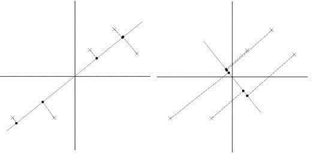
假设我们选择两条不同的直线做投影，那么左右两条中哪个好呢？根据我们之前的方差最大化理论，左边的好，因为投影后的样本点之间方差最大。
这里先解释一下投影的概念：
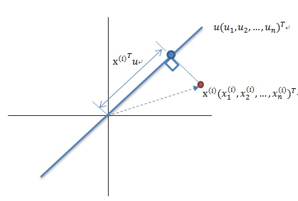
两个向量的点积（内积），等于一个向量在另一个向量上的投影长度，等于两个向量对应坐标分量之积的代数和。
从内积数值上我们可以看出两个向量的在方向上的接近程度。当内积值为正值时，两个向量大致指向相同的方向（方向夹角小于90度）；当内积值为负值时，两个向量大致指向相反的方向（方向角大于90度）；当内积值为0时，两个向量互相垂直
红色点表示样例 \(x^{(i)}\)，蓝色点表示 \(x^{(i)}\) 在 u 上的投影，u 是直线的斜率也是直线的方向向量，而且是单位向量。蓝色点是 \(x^{(i)}\) 在 u 上的投影点，离原点的距离是 \(\langle x^{(i)}, u\rangle\) （即 \((x^{(i)})^T u\) 或者 \(u^T x^{(i)}\)）由于这些样本点（样例）的每一维特征均值都为 0，因此投影到 u 上的样本点（只有一个到原点的距离值）的均值仍然是0。
回到上面左右图中的左图，我们要求的是最佳的u，使得投影后的样本点方差最大。
由于投影后均值为0，因此方差为：
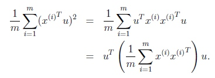
中间那部分很熟悉啊，不就是样本特征的协方差矩阵么（\(x^{(i)}\)的均值为0，一般协方差矩阵都除以m-1，这里用m）。
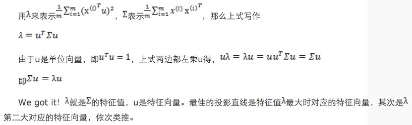
因此，我们只需要对协方差矩阵进行特征值分解，得到的前k大特征值对应的特征向量就是最佳的k维新特征，而且这k维新特征是正交的。得到前k个u以后，样例 x^(i) 通过以下变换可以得到新的样本。

其中的第j维就是 \(x^{(i)}\) 在 \(u_j\)上的投影。
通过选取最大的k个u，使得方差较小的特征（如噪声）被丢弃。
这是其中一种对PCA的解释，第二种是错误最小化。
总结与讨论
PCA技术的一大好处是对数据进行降维的处理。我们可以对新求出的“主元”向量的重要性进行排序，根据需要取前面最重要的部分，将后面的维数省去，可以达到降维从而简化模型或是对数据进行压缩的效果。同时最大程度的保持了原有数据的信息。
PCA技术的一个很大的优点是，它是完全无参数限制的。在PCA的计算过程中完全不需要人为的设定参数或是根据任何经验模型对计算进行干预，最后的结果只与数据相关，与用户是独立的。
但是，这一点同时也可以看作是缺点。如果用户对观测对象有一定的先验知识，掌握了数据的一些特征，却无法通过参数化等方法对处理过程进行干预，可能会得不到预期的效果，效率也不高。
SVD(singular value decomposition) 奇异值分解
- 优点
- 简化数据
- 去除噪声
- 提高算法的结果。
- 缺点
- 数据转换可能难以理解。
- 适用数据类型
- 数值型
- SVD是矩阵分解的一种类型。
总结：SVD是一种强大的降维工具，我们可以利用SVD来逼近矩阵并从中提取重要特征。通过保留矩阵80%~90%的能量，就可以得到重要的特征并去掉噪声。SVD已经运用到多个应用中，其中一个成功的应用案例就是推荐引擎。推荐引擎将物品推荐给用户，协同过滤则是一种基于用户喜好和行为数据的推荐和实现方法。协同过滤的核心是相似度计算方法，有很多相似度计算方法都可以用于计算物品或用户之间的相似度。通过在低维空间下计算相似度，SVD提高了推荐引擎的效果。
深度学习
我们先说什么是深度学习。其实从整体上来讲，Deep Learning就是曾经的多层神经网络，整体的思想认为每一个层次都可以被作为一个独立的特征抽象存在，所以最广泛地被用作特征工程上，而GPU的存在更是解决了几十年前的ANN的训练效率问题。那么简单来说，Deep Learning可以对抽取出的特征进行非线性组合形成更有效的特征表示。确实，从这一点来说，Deep Learning确实从理论上很好的解决了机器学习领域很麻烦的“特征抽取”问题，但是在实际的工业界，“特征工程”到底有多复杂？我们看看Deep Learning表现最好的IR领域吧，曾经是怎么做的呢？据了解微软有个小Team专门做的事儿就是从图片上找各种各样的特征，因为算法本身其实已经被锁死在Random Forest上了，往往特征的微调就能带来算法效果的极大提升，那么Deep Learning的出现当然可以很好地取代这项工作(实际效果确实无法得知)，那么总结下Deep Learning的好处：从海量的特征中通过特征工程抽取出有效的特征组合。
但是刨除掉语音和图像领域，转向离我们更近的工作，无论是推荐系统还是数据挖掘，特征是怎么出来的呢？对于一个电影，对于一个用户，满打满算一共就那么多特征，这个时候Deep Learning根本无从发挥。那么再退一步说，就算把User对于Item的标定作为Item的特征，由于在实际中大部分的缺失值存在，那么如果你希望用Deep Learning来对该矩阵做特征重组，第一件事情就是如何填充缺失值，而这恰恰是比特征工程更困难的事情。
大数据
大数据其实意味着大样本量，那么大样本量带来的是高置信度以及广覆盖度。例如从FM来说，大数据量意味着更全面地了解一个用户的听歌品位，从金融互联网的信用风险评估来说，大数据量意味着不仅仅从消费记录而包含了社交网络信息去对用户做更全面的评价，从用户画像来说意味着建立全面的兴趣图谱和知识图谱，这些都是大数据带给我们的实际意义。说得学术一些，我们不妨认为大数据是频率学派对于贝叶斯学派一次强有力的逆袭。那么既然说到这个份上了，我们不妨思考一下，我们是不是有希望在回归贝叶斯学派，利用先验信息+小数据完成对大数据的反击呢？
另外，既然我们已经说到了大数据的广覆盖度，就针对这个再额外说一下吧。诚然，大数据能够全面地覆盖到所有信息，但是从实际的工业界来看，考虑到实际的计算能力以及效果，大多数公司都会对大数据做“去噪”，那么在去噪的过程中去除的不仅仅是噪音，也包括“异常点”，而这些“异常点”，恰恰把大数据的广覆盖度给降低了，于是利用大数据反而比小数据更容易产生趋同的现象。尤其对于推荐系统来说，这些“异常点”的观察其实才是“个性化”的极致。
用户画像
任何系统不要脱离产品而存在。先吐个槽，之前在某个公司面试，某个公司上来就问我，你觉得我们的用户画像应该怎么做？这个问题是非常业余的(这个问题就像是有人问我我们网站有性能问题，你说咋办；好吧，这个问题也是这个公司问我的)，任何数据系统都是强产品关联的，这也是太多公司去做数据系统的误区，在这里我还是用户画像为例。 用户画像到底是什么，其实说简单了他就是一个用户宽表，如果偏要我说需要注意的，就是在选择数据库的时候一定要选择列容易扩充的数据库。如果要说具体需要哪些字段，我还真的没法说，我只能把他归类成用户元属性数据，行为统计数据，潜在挖掘数据，至此而已。因为数据系统从来不是一个事先规划好的系统，而是需要随着业务增长来逐渐填充的系统，这也是数据平台难做的原因。 所以我真心无法理解有一些不太大的公司成立了一个部门，这个部门专门做用户画像(例如PPTV)。
正则化
正则化是针对过拟合而提出的，以为在求解模型最优的是一般优化最小的经验风险，现在在该经验风险上加入模型复杂度这一项（正则化项是模型参数向量的范数），并使用一个rate比率来权衡模型复杂度与以往经验风险的权重，如果模型复杂度越高，结构化的经验风险会越大，现在的目标就变为了结构经验风险的最优化，可以防止模型训练过度复杂，有效的降低过拟合的风险。
奥卡姆剃刀原理，能够很好的解释已知数据并且十分简单才是最好的模型。
L1和L2正则的区别，如何选择L1和L2正则
他们都是可以防止过拟合，降低模型复杂度
- L1 是在 loss function 后面加上模型参数的1范数（也就是|xi|）
- L2 是在 loss function 后面加上模型参数的2范数（也就是sigma(xi2)），注意L2范数的定义是sqrt(sigma(xi2))，在正则项上没有添加sqrt根号是为了更加容易优化
- L1 会产生稀疏的特征
- L2 会产生更多地特征但是都会接近于0
L1会趋向于产生少量的特征，而其他的特征都是0，而L2会选择更多的特征，这些特征都会接近于0。L1在特征选择时候非常有用，而L2就只是一种规则化而已。
凸优化
在机器学习中往往是最终要求解某个函数的最优值，但是一般情况下，任意一个函数的最优值求解比较困难，但是对于凸函数来说就可以有效的求解出全局最优值。
凸集
一个集合C是，当前仅当任意x,y属于C且0<=theta<=1，都有 \(\theta x+(1-\theta)y\) 属于C
用通俗的话来说C集合线段上的任意两点也在C集合中
凸函数
一个函数f其定义域(D(f))是凸集，并且对任意x,y属于D(f)和0<=theta<=1都有
\(f(\theta x+(1-\theta)y)<=\theta f(x)+(1-\theta)f(y)\) —这个叫做jensen不等式
用通俗的话来说就是曲线上任意两点的割线都在曲线的上方
常见的凸函数有
- 指数函数 \(f(x)=a^x\) a>1
- 负对数函数 \(-log_a x\) a>1,x>0
- 开口向上的二次函数等
凸函数的判定
- 如果f是一阶可导，对于任意数据域内的x,y满足 f(y)>=f(x)+f’(x)(y-x)
- 如果f是二阶可导
凸优化应用举例
- SVM：其中由 max|w| 转向
min(1/2*|w|^2) - 最小二乘法？
- LR的损失函数
sigma(yi*log(hw(x))+(1-yi)*(log(1-hw(x))))
特征向量
归一化方法
- 线性函数转换，表达式如下：y=(x-MinValue)/(MaxValue-MinValue)
- 对数函数转换，表达式如下：y=log10 (x)
- 反余切函数转换 ，表达式如下：y=arctan(x)*2/PI
- 减去均值，乘以方差：y=(x-means)/ variance
异常值处理
用均值或者其他统计量代替
ROC、AUC
ROC和AUC通常是用来评价一个二值分类器的好坏
ROC
曲线坐标上：
- X轴是FPR（表示假阳率-预测结果为positive，但是实际结果为negitive，FP/(N)）
- Y轴式TPR（表示真阳率-预测结果为positive，而且的确真实结果也为positive的,TP/P）
那么平面的上点(X,Y)：
- (0,1)表示所有的positive的样本都预测出来了，分类效果最好
- (0,0)表示预测的结果全部为negitive
- (1,0)表示预测的错过全部分错了，分类效果最差
- (1,1)表示预测的结果全部为positive
针对落在x=y上点，表示是采用随机猜测出来的结果
ROC曲线建立
一般默认预测完成之后会有一个概率输出p，这个概率越高，表示它对positive的概率越大。
现在假设我们有一个threshold，如果p>threshold，那么该预测结果为positive，否则为negitive，按照这个思路，我们多设置几个threshold,那么我们就可以得到多组positive和negitive的结果了，也就是我们可以得到多组FPR和TPR值了
将这些(FPR,TPR)点投射到坐标上再用线连接起来就是ROC曲线了
当threshold取1和0时，分别得到的就是(0,0)和(1,1)这两个点。（threshold=1，预测的样本全部为负样本，threshold=0，预测的样本全部为正样本）
AUC
AUC(Area Under Curve)被定义为ROC曲线下的面积，显然这个面积不会大于1（一般情况下ROC会在x=y的上方，所以0.5<AUC<1）.
AUC越大说明分类效果越好
为什么要使用ROC和AUC
因为当测试集中的正负样本发生变化时，ROC曲线能基本保持不变，但是precision和recall可能就会有较大的波动。
10折交叉验证
英文名是10-fold cross-validation，用来测试算法的准确性。是常用的测试方法。将数据集分成10份。轮流将其中的9份作为训练数据，1分作为测试数据，进行试验。每次试验都会得出相应的正确率（或差错率）。10次的结果的正确率（或差错率）的平均值作为对算法精度的估计，一般还需要进行多次10折交叉验证，在求其平均值，对算法的准确性进行估计。
极大似然估计
极大似然估计，只是一种概率论在统计学中的应用，它是参数评估的方法之一。说的 已知某个随机样本满足某种概率分布，但是其中具体的参数不清楚，参数估计通过若干次实验，观察其结果，利用结果推出参数的大概值。极大似然估计是建立在这样的思想上的：已知某个参数能使这个样本出现的概率最大。我们当然不会再去选择其他其他小概率的样本，所以干脆就把这个参数作为估计的真实值。
熵
在信息论中，熵表示的是不确定性的量度。信息论的创始人香农在其著作《通信的数学理论》中提出了建立在概率统计模型上的信息度量。他把信息定义为”用来消除不确定性的东西“。熵的定义为信息的期望值。
ps:熵指的是体系的混乱程度，它在控制论，概率论，数论，天体物理，生命科学等领域都有重要的应用，在不同的学科中也有引申出更为具体的定义，是各个领域十分重要的参量。熵由鲁道夫.克劳修斯提出，并应用在热力学中。后来在，克劳德.埃尔伍德.香农 第一次将熵的概念引入到信息论中来。
后验概率
后验概率是信息论的基本概念之一。在一个通信系统中，在收到某个消息之后，接收端所了解到的该消息发送的概率称为后验证概率。后验概率是指在得到”结果“的信息后重新修正的概率，如贝叶斯公式中的。是执果寻因的问题。后验概率和先验概率有着不可分割的联系，后验的计算要以先验概率为基础，其实说白了后验概率其实就是条件概率。
集成方法
将不同的分类器组合起来，而这种组合结果则被称为集成方法（ensemble method）或者元算法（meta-algorithm）。
图片解释基本概念

Test and training error: 为什么低训练误差并不总是一件好的事情呢
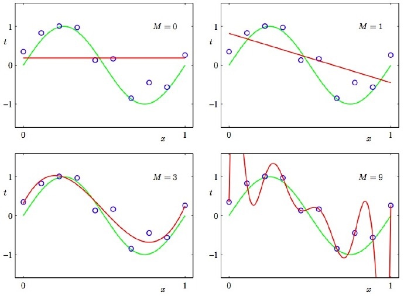
Under and overfitting: 低度拟合或者过度拟合的例子。PRML 图1.4.多项式曲线有各种各样的命令M，以红色曲线表示，由绿色曲线适应数据集后生成。
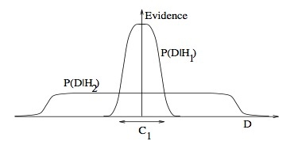
Occam’s razor
这张图给了为什么复杂模型原来是小概率事件这个问题一个基本的直观的解释。水平轴代表了可能的数据集D空间。贝叶斯定理以他们预测的数据出现的程度成比例地反馈模型。这些预测被数据D上归一化概率分布量化。数据的概率给出了一种模型Hi,P(D|Hi)被称作支持Hi模型的证据。一个简单的模型H1仅可以做到一种有限预测，以P(D|H1)展示；一个更加强大的模型H2，举例来说，可以比模型H1拥有更加自由的参数，可以预测更多种类的数据集。这也表明，无论如何，H2在C1域中对数据集的预测做不到像H1那样强大。假设相等的先验概率被分配给这两种模型，之后数据集落在C1区域，不那么强大的模型H1将会是更加合适的模型。

Irrelevant features:
为什么无关紧要的特征会损害KNN，聚类，以及其它以相似点聚集的方法。左右的图展示了两类数据很好地被分离在纵轴上。右图添加了一条不切题的横轴，它破坏了分组，并且使得许多点成为相反类的近邻。
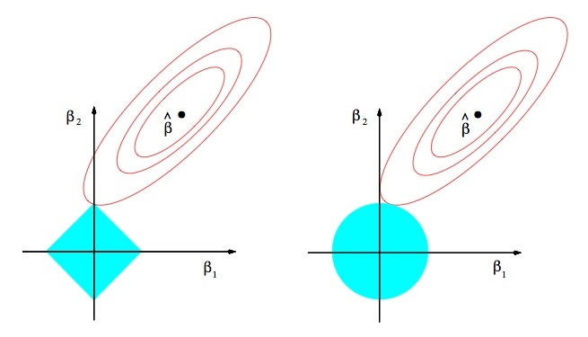
Sparsity:
Lasso算法（L1正规化或者拉普拉斯先验）给出了稀疏的解决方案（比如：带更多0的加权向量）
lasso算法的估算图像(左)以及岭回归算法的估算图像（右）。展示了错误的等值线以及约束函数。分别的，当红色椭圆是最小二乘误差函数的等高线时，实心的蓝色区域是约束区域|β1| + |β2| ≤ t 以及 \(β_1^2 + β_2^2 ≤ t_2\)